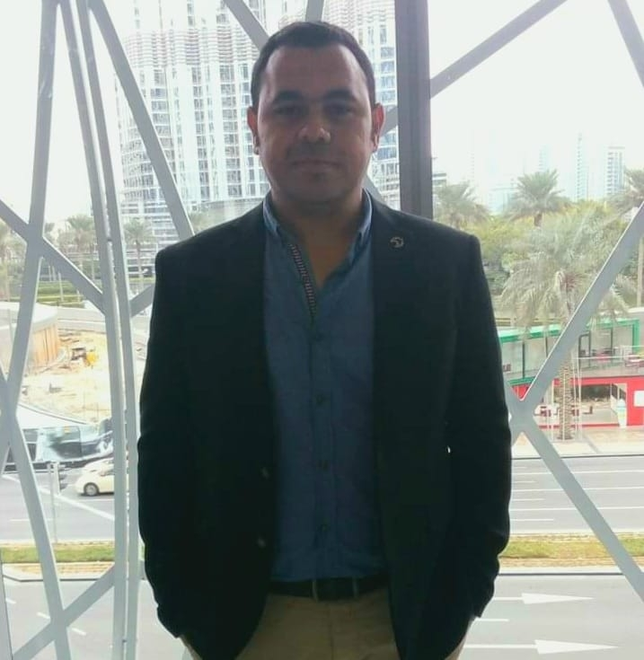
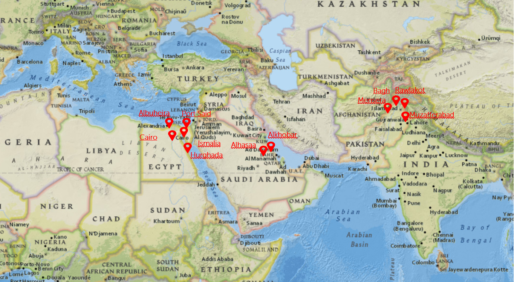

About ASM for engineering and technilogies
ASM for engineering and technilogies is
specialist engineering firm, specilized in
infrastructure, construction management
and engineering technilogies.
ASM has started work on 2012 by it’s
founder Eng. Amro Aboulelez with the
design of many construction &
infrastruture works as subconsultant and
engineering services provider, design and
implementation of industerials cities &
new cities & compounds.

Eng. Amro Abouelez linkedin’s profile
ASM for engineering and technilogies projects around the world
ASM has done designs / managements
works & implements a lot of engineerings
works cross the world, and starting the
technical & design works as shown on
the next picture, our clients can find all
places we have finished many
successfully projects, and we will give
you more destails on next chapters of this
profile.
Also ASM has successfully implement
many projects in site works as shown on
the next picture:

Also ASM has successfully implement
many projects in site works as shown on
the next picture:

Our vision & mission
After decades of experience & growth,
ASM continues to practice the same style
of management incorporated at its
founding, a style based on mutual trust
with clients, ease of communication, and
smooth collaboration across locations
and departments. ASM offers new
technology to improve construction
efficiency and enhance project controls.
We are a leading diversified company
carrying out construction, engineering,
procurement, development and
investment activities internationally. We
are committed to providing reliable,
amicable, and professional service to our
valuable clients, and to being supportive
to local businesses and social activities,
being friendly to the environment as well
as being proactive in the socio-economic
environments within which we operate.
Our appreciation of our clients’ interests,
evidenced by meeting their requirements
and ensuring high-quality work, is the
prime directive of our management.
Our growth and profitability are
maintained through innovation, technical
enhancement, and adaptability to all our
markets.
Our profitability is directed
towards sustaining growth and to
providing satisfactory returns to our
shareholders. Our commitment to
growth is firmly linked to our
commitment to our employees’
continuous development and rewarding
careers. We are also devoted to our
employee’s safety and health, job
security, and welfare. Our strength
emanates from our distinct culture,
strong and close relationships with our
clients, employees’ competence and
loyalty, entrepreneurial and flexible
management, capability, dynamism,
focus on quality and safety, and
commercial acumen.